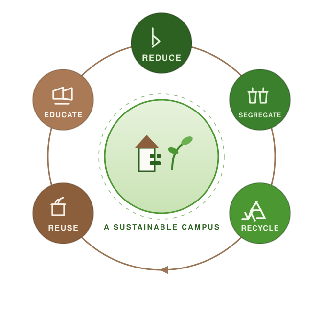

By separating waste at source, reducing disposable materials and sending suitable paper and plastic for recycling, our campus can become cleaner and more resource-efficient.

Reuse ideas such as seed paper and plant pots can support awareness when carried out safely. Long-term success depends on everyone taking part and checking progress regularly.
Nothing in this project asks the campus to become a different place overnight. It asks for three labelled bins in the right places, a routine that the people who handle waste already know how to follow, and a handful of students who are willing to check that it is actually working.
That is the whole argument. A sustainable campus is not built from a single large intervention — it is built from a habit that a few people start and the rest of the campus gradually adopts.
Less waste. More value. A greener campus.From Waste Campus to a Sustainable Campus
Hyderabad Institute of Technology and Management — submitted by four students of the EVS course.
A sustainable campus starts with small actions — and every one of them is something a student can begin.